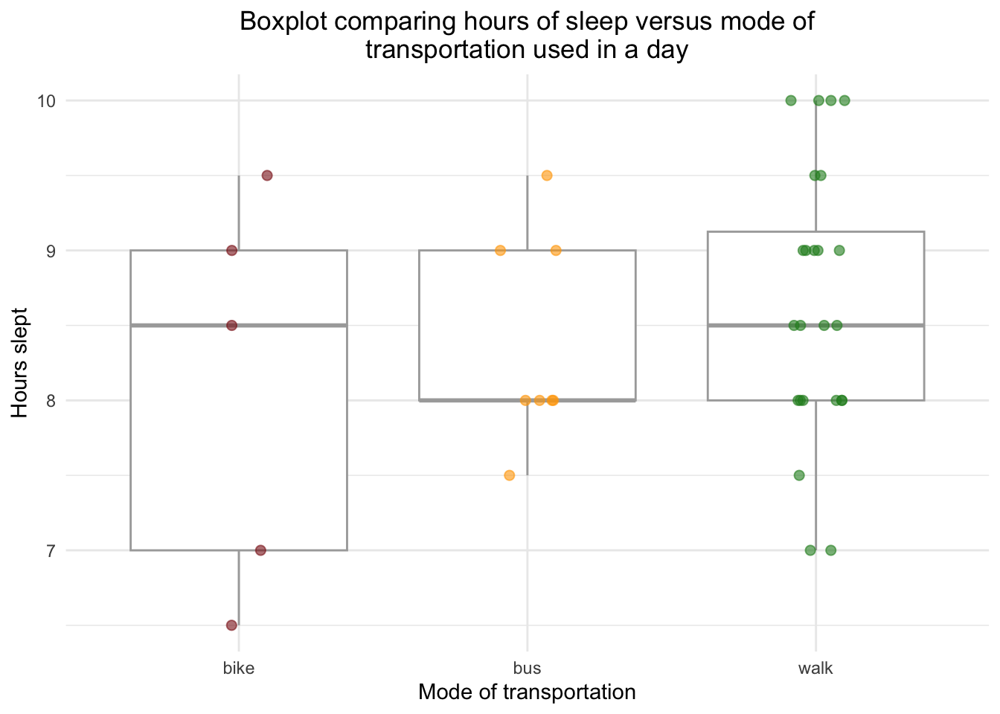

#| message: false# Read in packageslibrary(tidyverse)
── Attaching core tidyverse packages ──────────────────────── tidyverse 2.0.0 ──
✔ dplyr 1.1.4 ✔ readr 2.1.5
✔ forcats 1.0.0 ✔ stringr 1.5.1
✔ ggplot2 3.5.1 ✔ tibble 3.2.1
✔ lubridate 1.9.4 ✔ tidyr 1.3.1
✔ purrr 1.0.4
── Conflicts ────────────────────────────────────────── tidyverse_conflicts() ──
✖ dplyr::filter() masks stats::filter()
✖ dplyr::lag() masks stats::lag()
ℹ Use the conflicted package (<http://conflicted.r-lib.org/>) to force all conflicts to become errors
library(janitor)
Attaching package: 'janitor'
The following objects are masked from 'package:stats':
chisq.test, fisher.test
library(here)
here() starts at /Users/chloe/Documents/ES_193DS/GIT/ES193DS_homework-03
library(gt)library(readxl)my_data <-read_xlsx(here("data","ES193DS_personal_data.xlsx"), sheet ="Sheet1") # read in datamy_data_clean <- my_data %>%clean_names() # clean data
Problem 1. Personal Data
a.
I could calculate the amount of sleep (hours) I get in a day and compare the results by grouping days by the main mode of transportation I used: bike, bus, or walking. I expect that I will get more hours of sleep on days when I walk and get more steps since I will be more tired after a day of walking. I would also expect that I sleep less on days where I take the bus since I would be less tired.
b.
ggplot(data = my_data_clean, aes(x = transportation_mode, # x-axisy = sleep_hrs, # y-axiscolor = transportation_mode)) +# fill geoms by transportation modegeom_boxplot(color ="darkgrey") +# create boxplotsgeom_jitter(height =0, # create jitter points and adjust their size, width, and opacitywidth =0.1,size =2,alpha =0.6) +# data points set to 60% opacityscale_color_manual(values =c("firebrick4", "orange", "forestgreen")) +# set custom colorstheme_minimal() +# minimal themelabs(title =str_wrap("Boxplot comparing hours of sleep versus mode of transportation used in a day", width =60), #wrap title so it doesn't get cut offx ="Mode of transportation", # title x axisy ="Hours slept") +# title y axistheme(legend.position ="none") +# take out the legendtheme(plot.title =element_text(hjust =0.5)) # center the title

c.
caption: jittered box plots comparing number of hours slept based on the mode of transportation used in a day (bike, bus, or walking). Each box summarizes the distribution of sleep hours for each transportation mode. The individual data points representing teh amount of hours slept in one day are jittered and offset to improve visibility.
d.
summary_table <- my_data_clean %>%# use my_data_cleangroup_by(transportation_mode) %>%# group by transportation moderename("Mode of Transportation"= transportation_mode) %>%# rename column 1summarise( # summarize dataQ1 =round(quantile(sleep_hrs, 0.25, na.rm =TRUE), 1), #calculate 1st quartileMedian =round(median(sleep_hrs, na.rm =TRUE), 1), # calculate medianQ3 =round(quantile(sleep_hrs, 0.75, na.rm =TRUE),1), # calculate third quartileMin =round(min(sleep_hrs, na.rm =TRUE), 1), # calculate minimum valueMax =round(max(sleep_hrs, na.rm =TRUE), 1) # calculate maximum value )summary_table %>%# create a summary tablegt() %>%# use gtcols_align(align ="center", # center info in the columnscolumns =c(Q1, Median, Q3, Min, Max) # center all columns but the first column ) %>%tab_header( title ="Summary of Sleep Hours by Transportation Mode"# create a title )
In the article titled “Pollination features and floral volatiles of Gymnospermium scipetarum (Berberidaceae),” the authors investigate the co-evolution between angiosperms and pollinators and wonder just how dependent flowering plants have become on these insects. To answer this question, the authors recorded the amount of seeds produced by Gymnospermium scipetarum racemes following a pollinators exclusion experiment where the flowers are capped to prevent contact with pollinators. They used a control test where a raceme was left uncapped to compare the results of the pollinator exclusion experiment using a Mann_Whitney U test to determine whether the difference in seed set is significant or not. The authors visualize their results with the box plot below comparing the median and spread from of the “capped” and “uncapped’ results.
b.
The authors clearly articulated the general results of their experiments using the box plots which help communicate the median, range and quartiles of the data which is appropriate for running a Mann-Whitney U test. The x and y axis are also appropriately named and clearly explain that experiment counted the amount of seeds produced in two separate groups: a capped group and a control group. However, the graph fails to show the mean, standard errors, individual data points and outliers, or model predictions which limits our view of the underlying data; instead the mean and standard deviations are communicated in the paragraph above.
c.
The authors eliminated any “visual clutter” by opting for a simple and effective box and whisker plot which entirely removes any individual data points. I would say that the figure also has a high data:ink ratio where nearly all visual elements contribute to communicating data.
d.
For this box plot, I would recommend some more interesting colors for the actual box plots to invite the viewer and make it more visually appealing. I would also include some outliers to the box plots for a more detailed data spread representation. Personally, I also like when the grid lines are visible, even if faint, to make it easier to connect the box plot data to the y axis. The graph is also missing a title which is necessary to quickly refer to each table and provide a brief summary of the graph contents.